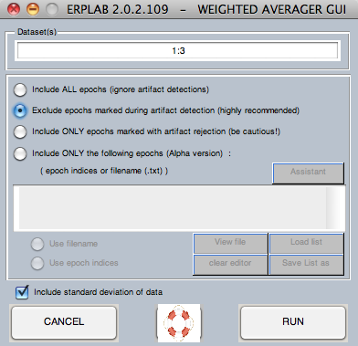

Computing averaged ERPs from an epoched dataset is quite simple. There is only one slight complication, which is that it is possible to average across multiple sets of EEG data at one time. Imagine, for example, that you recorded half of the data for a given subject on one day and the other half on a different day, resulting in two separate EEG files (stored in separate datasets). Or imagine that you have 6 conditions, and each was recorded in a separate file. You could average each of the datasets separately and then combine the averages. However, ERPLAB makes it possible to combine them during the averaging process, which is usually easier. This is accomplished by simply specifying multiple datasets when you average. All the datasets are then treated as if they are one big dataset (this is sometimes called "weighted averaging", because each trial is weighted equally).
To compute averaged ERPs, you must first load one or more epoched datasets in EEGLAB. You can then select ERPLAB > Compute Averaged ERPs. In the window that appears, enter the number of the dataset that contains the data you would like to average (or multiple datasets). For example, if you want to average the epochs in dataset #2, you would simply type '2' into the window. If you wanted to average the epochs in datasets 2, 3, and 5, you would type '2 3 5' into the window. Or, if the datasets are consecutive, you could type something like '1:3' into the window (as in the screenshot below). The current dataset is the default. If you aren't sure what the number of your dataset is, just look in the Datasets menu. Click RUN to compute the averaged ERPs.

You will ordinarily want to exclude all epochs that have been marked as containing artifacts. It is also possible to ignore the artifact marks by selecting Include ALL epochs. You can even include only the epochs with artifacts (by selecting Include ONLY epochs marked with artifact rejection), which could be helpful in seeing exactly how the artifacts are distorting the data.
Important note: Although ERPLAB keeps track of artifacts using the artifact flags in the EEG.EVENTLIST structure, EEGLAB instead uses the EEG.reject structure. When ERPLAB detects an artifact, it updates both EEG.EVENTLIST and EEG.reject. When EEGLAB's artifact detection routines are used, only EEG.reject is updated. Consequently, ERPLAB consults both EEG.EVENTLIST and EEG.reject to determine which epochs to include and exclude during averaging. You can also synchronize the information in EEG.EVENTLIST and EEG.reject with the ERPLAB > Artifact Detection > Synchronize Artifact Info in EEG and EVENTLIST command.
You can also choose to compute the standard deviation (across all epochs, separately for each time point in each bin) along with the average. Note that the standard deviation is removed by certain other processing steps (e.g., filtering, bin operations, averaging across ERPsets) because these steps render the previous standard deviation meaningless.
When the averaged ERPs have been computed, a window will appear allowing you to name and save the ERPset containing the new ERP structure (see screenshot below). This same window appears whenever you create a new ERPset. Here's how it works:
Note: The averaging routine can average together multiple datasets, which is very useful when a single subject's data are divided into different datasets. In principle, this routine can also average together the data from different subjects. However, we recommend against this. Instead, the data from each subject should be averaged individually, and then the ERPLAB > Average Across ERPsets should be used to average together these averages.
| <<Behavioral Analyses | Table of Contents | Getting Command Line Info>> |